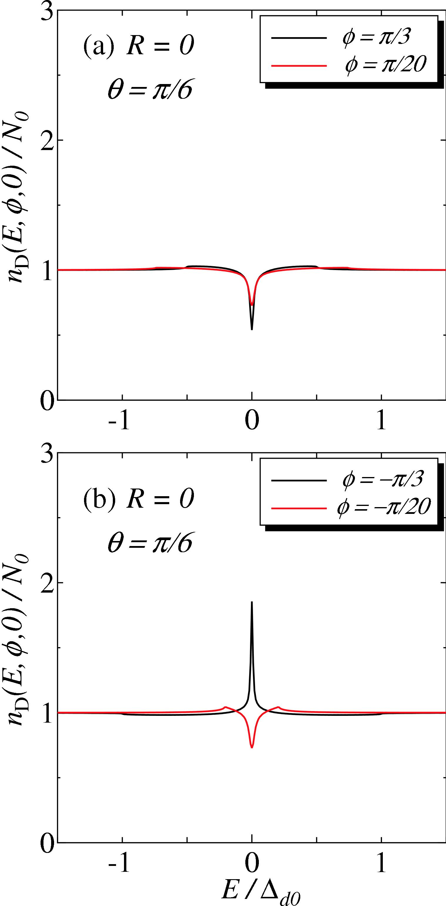

Sample #1

📜 论文标题 Paper Title
Theory of proximity effect in normal metal/d_{x²-y²}-wave superconductor interface in the presence of subdominant components of the pair potentials
🤖 AI Recaption (Qwen-VL 生成的增强描述)
This image displays two plots, labeled (a) and (b), showing the angle-resolved local density of states (LDOS) at the interface of a normal metal/d-wave superconductor junction. Both plots have the normalized LDOS, n_D(E,φ,0)/N₀, on the y-axis and the normalized energy, E/Δ_d0, on the x-axis. In both plots, the parameter R=0 and θ=π/6 are specified. Plot (a) shows two curves: a black solid line for φ = π/3 and a red solid line for φ = π/20. Both curves exhibit a dip at E/Δ_d0 = 0. Plot (b) shows two curves: a black solid line for φ = -π/3 and a red solid line for φ = -π/20. The black curve in plot (b) shows a sharp peak at E/Δ_d0 = 0, while the red curve shows a dip at the same energy.
📁 图片路径 Image Path
images/0705/0412357.tar.gz/fig014.png
📏 图片尺寸
1518 × 3073 px